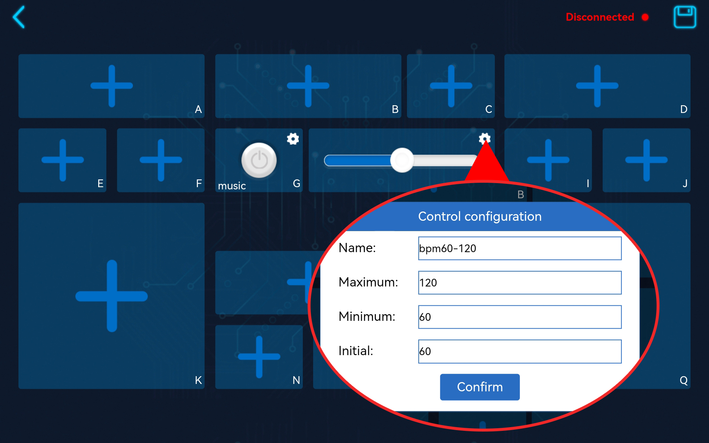

Note
Hello, welcome to the SunFounder Raspberry Pi & Arduino & ESP32 Enthusiasts Community on Facebook! Dive deeper into Raspberry Pi, Arduino, and ESP32 with fellow enthusiasts.
Why Join?
Expert Support: Solve post-sale issues and technical challenges with help from our community and team.
Learn & Share: Exchange tips and tutorials to enhance your skills.
Exclusive Previews: Get early access to new product announcements and sneak peeks.
Special Discounts: Enjoy exclusive discounts on our newest products.
Festive Promotions and Giveaways: Take part in giveaways and holiday promotions.
üëâ Ready to explore and create with us? Click [here] and join today!
1.6 Electronic Piano¶
In this project, we use the button widget on the SunFounder Controller as the piano keys and connect a passive buzzer to the Pico to simulate an electronic piano.
Build the circuit.
Create a new controller, note that Single Stick is selected.
Add a Button widget to the G area, and click the Set button in the upper right corner to change the name.
Add a Slider widget to the H area and set its name, maximum, minimum and initial value.

Add a Button widget in NOPSMQR area and change their names to note C ~ note B respectively.
After saving, the effect of the remote control is shown below.
Run
1.6_ws_piano.py.Note
Open the
1.6_ws_piano.pyfile under the path ofeuler-kit/esp8266or copy this code into Thonny, then click “Run Current Script” or simply press F5 to run it.Don’t forget to click on the “MicroPython (Raspberry Pi Pico)” interpreter in the bottom right corner.
For detailed tutorials, please refer to Open and Run Code Directly.
Each time you rerun the code, you need to connect your device’s Wi-Fi to
my_esp8266, then turn on SunFounder Controller and reconnect.Now, click the Run/Stop button in the upper right corner.
If you press the Button widget in G area, the buzzer will play a melody.
You can use the Slider widget in the H area to adjust the speed of this melody.
If you press the button in NOPSMQR area separately, the passive buzzer will sound different notes, and the LED will light up and fade out when you press each button.
How it works?
led = machine.PWM(machine.Pin(15))
led.freq(1000)
buzzer = machine.PWM(machine.Pin(14))
Define the connection pins for the LED and buzzer, and the frequency of the LED.
#note
note = [262,294,330,349,392,440,494,523]
#melody
NOTE_C4 = 262
NOTE_G3 = 196
NOTE_A3 = 220
NOTE_B3 = 247
melody =[NOTE_C4,NOTE_G3,NOTE_G3,NOTE_A3,NOTE_G3,NOTE_B3,NOTE_C4]
Define the frequency of CDEFGAB and a melody here.
def light_led():
global brightness
brightness = 65535
led.duty_u16(brightness)
The light_led() function is used to let the LED display the maximum brightness(65535).
def tone(pin,frequency):
pin.freq(frequency)
pin.duty_u16(30000)
light_led()
The tone() function can generate a square wave of the specified frequency (and 50% duty cycle) on a pin, also let the LED light up.
def noTone(pin):
pin.duty_u16(0)
The notone() function is used to stop the generation of a square wave triggered by tone().
def music_box(duration):
for n in melody:
tone(buzzer,n)
time.sleep_ms(duration)
noTone(buzzer)
time.sleep_ms(duration)
noTone(buzzer)
The music_box() function is to make the passive buzzer play the melody in the melody[] array with a specific beat.
def on_receive(data):
global bpm_flag,gap,brightness
bpm = data['H']
bpm_flag = data['G']
gap = 60 * 1000 / bpm
# fade led
if brightness >= 6000:
brightness = brightness-30000
led.duty_u16(brightness)
# music box
if data['G'] == True:
music_box(int(gap/4))
return
# piano
if data['N'] == True:
tone(buzzer,note[0])
elif data['O'] == True:
tone(buzzer,note[1])
elif data['P'] == True:
tone(buzzer,note[2])
elif data['S'] == True:
tone(buzzer,note[3])
elif data['M'] == True:
tone(buzzer,note[4])
elif data['Q'] == True:
tone(buzzer,note[5])
elif data['R'] == True:
tone(buzzer,note[6])
else:
noTone(buzzer)
ws.on_receive = on_receive
Here, the on_receive() function can be divided into 3 parts.
fade led: Make the LED light up and then turn off after an intermediate brightness.
music box: When the button widget in the G area is pressed, the buzzer plays the melody in the
melody[]array in 1/4 beats.piano: When the buttons in NOPSMQR area are pressed separately, the passive buzzer will play different notes.